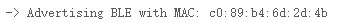
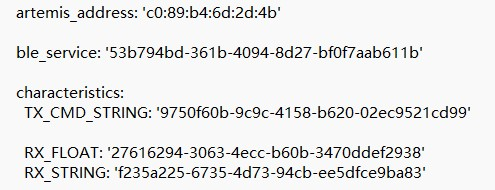
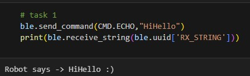
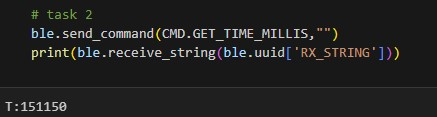
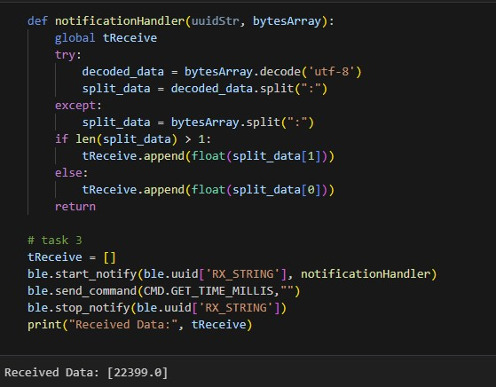
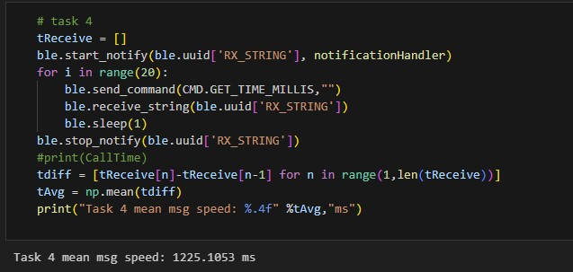
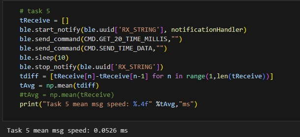
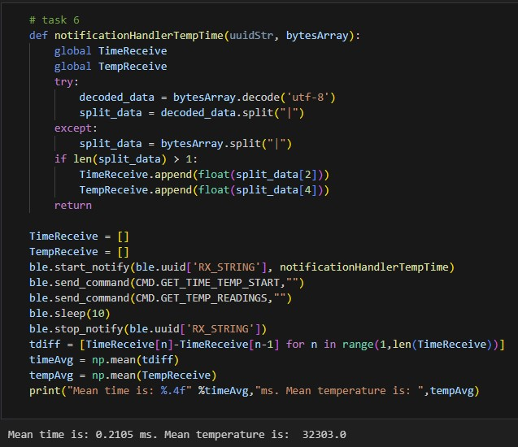
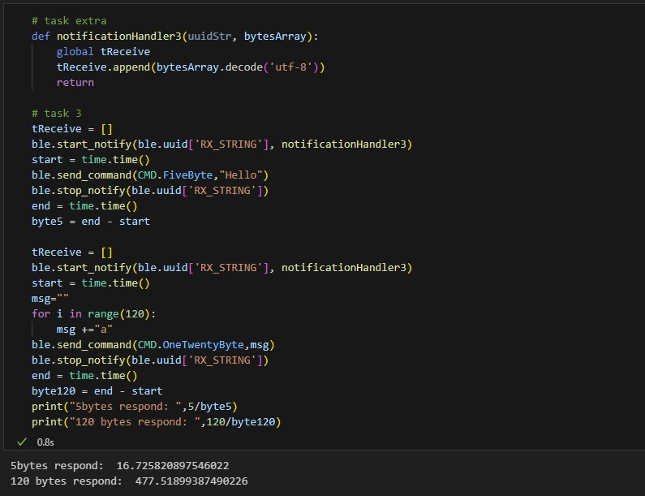

Part2: Bluetooth Connection
Objectives
In this section of the lab, we establish a protocol for the bi-directional exchange of data between the computer and the Artemis board. This process is facilitated through the utilization of the Bluetooth stack, employing Python for the PC side and Arduino for the Artemis board side.
Setup
The following lab was done on a Windows 11 laptop with Anaconda3 and Python 3.11. Notice that Venv is not installed, and the intended connection between the Artemis board and the computer was successfully established.
To connect successfully, we first connect the board to the computer and upload ble_arduino.ino script provided in the lab to get the MAC address as shown in the figure below.

Then in the "connection.yaml" file, change the MAC address to the one printed by the board. Then, a unique UUID was needed to connect to the right device. The id was generated using the code provided and overwritten the default UUID in the "connection.yaml" and "BLE_UUID_TEST_SERVICE" files. The finalized "connection.yaml" configuration is provided in the graph below for reference.

Echo Test
To assess the connectivity between the Artemis board and the computer, a series of commands were executed for diagnostic purposes. The initial command employed for this purpose was the "ECHO" command. This command facilitated the transmission of a character string from the Python code to the Artemis board, which, in turn, reciprocated by transmitting the received phrase back to the Python code. This command was added to the Arduino code in ble_arduino.ino as shown below.
case ECHO:
char char_arr[MAX_MSG_SIZE];
// Extract the next value from the command string as a character array
success = robot_cmd.get_next_value(char_arr);
if (!success)
return;
tx_estring_value.clear();
tx_estring_value.append("Robot says -> ");
tx_estring_value.append(char_arr);
tx_estring_value.append(" :)");
tx_characteristic_string.writeValue(tx_estring_value.c_str());
Serial.print("Robot says -> ");
Serial.println(char_arr);
Serial.println(" :)");
return;
break;
In Python sent the Echo command to Artemis, and see the reult shown below.

GET_TIME_MILLIS
The execution of the GET_TIME_MILLIS command encompasses the retrieval of the present time from the Artemis board. This process entails the utilization of the millis() function within the Arduino library to capture the current timestamp, subsequently converting it into a double data type. The resultant value is transmitted to Python as a string. The pertinent section of the Arduino code is shown below:
case GET_TIME_MILLIS:
char msg[20];
tx_estring_value.clear();
tx_estring_value.append("T:");
sprintf(msg,"%lu",millis());
tx_estring_value.append(msg);
tx_characteristic_string.writeValue(tx_estring_value.c_str());
Serial.println(tx_estring_value.c_str());
break;
On the Python side, the following command is used. Notice that the return value is a timestamp not a real time.

Notification Handler
In the foregoing examples, the proper reception of data necessitates the invocation of the "receive_string" method. However, in scenarios where the Artemis persistently transmits data at an indeterminate rate, relying solely on manual invocation may lead to suboptimal reception. Consequently, the implementation of a notification handler becomes imperative, ensuring the automatic retrieval and processing of transmitted data. The ensuing code snippet illustrates the structure of the handler function, along with the corresponding code for its invocation:

Real-time Processing
In this example, we call "GET_TIME_MILLIS" in Python through a loop. This function gets the current time in milliseconds and sends it to the computer to be received and processed by the notification handler as soon as a new timestamp is collected. Another way of implementing this real-time process is to create a command that loops in Arduino. The Python code to get and receive data (timestamp) is:

The "GET_TIME_MILLIS" command yields the recorded timestamp. By computing the temporal disparity between two consecutive timestamps, an estimation of the rate at which the Artemis accumulates and dispatches data can be derived. The empirical findings indicate an average speed of approximately 1.23 seconds for the complete process of data collection and transmission of a string.
Offline Processing
As a counterpart to real-time processing, an alternative approach involves the storage of collected data on the Artemis, with subsequent transmission after the entirety of the data is collected. This is accomplished by establishing a global array capable of storing timestamps. Within the Arduino function, instead of executing real-time transmission, each timestamp is systematically inserted into the array. Furthermore, the introduction of a "SEND_TIME_DATA" command is implemented. This command iteratively traverses the array, transmitting each data point as a string to the computer for subsequent processing. The Arduino code is then enhanced with the inclusion of the following cases:
case GET_20_TIME_MILLIS:
for (int x=0; x<20; x++){
RecordTimes[x] = new char[20];
sprintf(RecordTimes[x],"%lu",millis());
}
Serial.print("Time test done! [20]");
break;
case SEND_TIME_DATA:
for (int x=0; x<20; x++){
tx_estring_value.clear();
tx_estring_value.append(RecordTimes[x]);
tx_characteristic_string.writeValue(tx_estring_value.c_str());
Serial.println(tx_estring_value.c_str());
}
break;
The Python code is:

The results show that the average speed at the Artemis board is able to collect timestamp is 0.05ms, which is 104 faster than real-time processing.
Offline Processing of Temperature Data
This section is similar to the former one but includes the use of digital temperature sensor. The Arduino codo is:
case GET_TIME_TEMP_START:
for (int x=0; x<20; x++){
RecordTemps[x] = new char[20];
RecordTimes[x] = new char[20];
sprintf(RecordTemps[x], "%lu", analogReadTemp());
sprintf(RecordTimes[x],"%lu",millis());
}
Serial.print("Temps test done! [20]");
break;
case GET_TEMP_READINGS:
for (int x=0; x<20; x++){
tx_estring_value.clear();
tx_estring_value.append("|Time:|");
tx_estring_value.append(RecordTimes[x]);
tx_estring_value.append("|Temp:|");
tx_estring_value.append(RecordTemps[x]);
tx_characteristic_string.writeValue(tx_estring_value.c_str());
Serial.println(tx_estring_value.c_str());
}
break;
The presented Python code and its corresponding results are delineated below. Upon examination of the outcome, it is evident that the Artemis expended an average time of 0.21 milliseconds for the data collection process. This duration is extended due to the inherent requirement of the device to retrieve data from the temperature sensor, thereby contributing to the observed elongation in the data collection time.

Data Processing Discussion
The advantage of real-time processing of data is that one can monitor the readings. Also, under certain conditions, the Artemis board might not have the capacity to process algorithms in time, and sending sensor data to the computer is needed. However, the communication between devices is slow. On the other hand, offline processing can have a high sample rate, but we do not know the data until finished collecting. The Artemis board has 384 kB of RAM. Assuming all memory can be used to store characters and one character causes 1 byte, we can store 393,216 characters.
Effective Data Rate And Overhead
This task compares the data rate for5 bytes and 120 bytes reply from the Artemis. Python code used is shown below:

The data rate for 5 bytes reply is 16.7 bytes/s, and data rate for 120 bytes is 477.5 bytes/s. Thus, the bigger message size leads to a bigger data rate, and larger message reduce the overhead.
Reliability
When carried out previous sections, reliability issue is observed. The computer cannot read all messages if the Artemis is publishing short messages at very high rate. To address this problem, a delay in sending message is needed, or we can use the offline processing method.